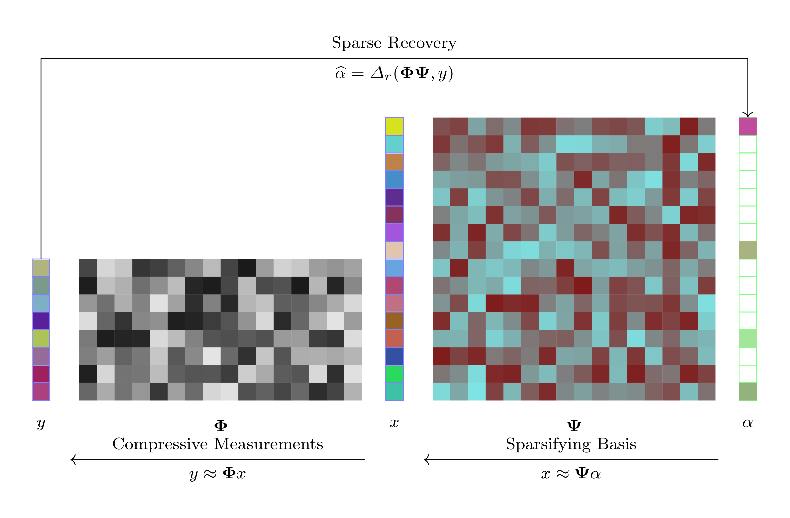
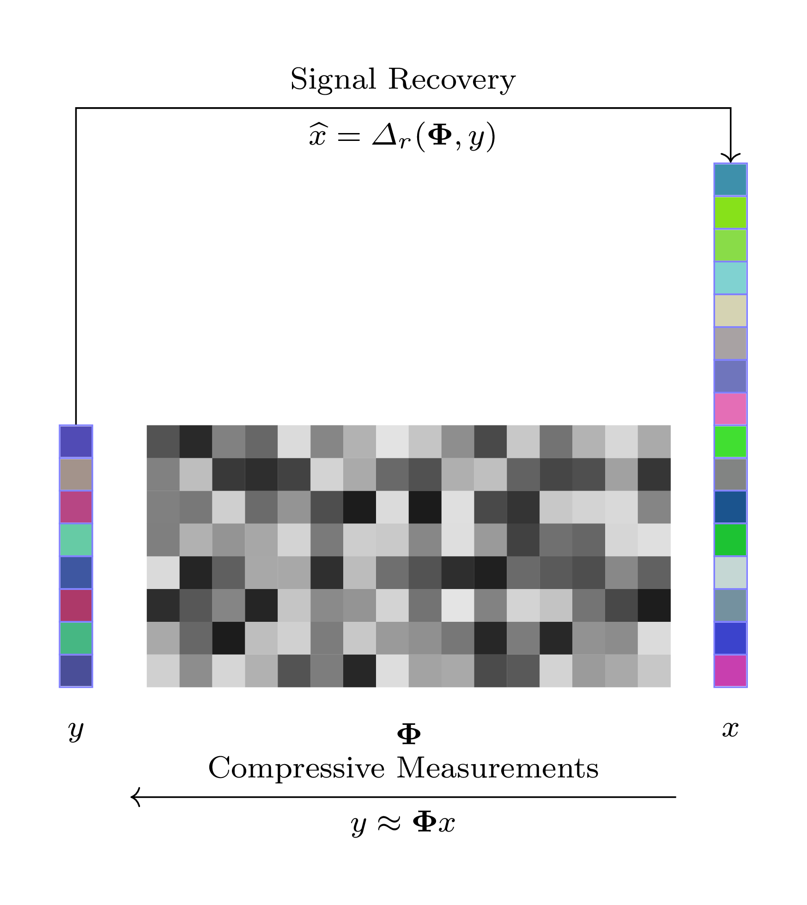
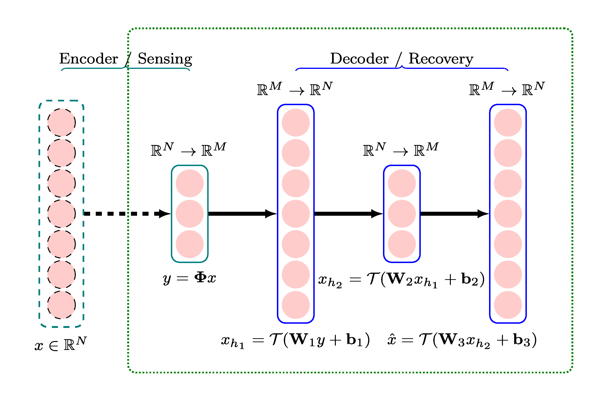
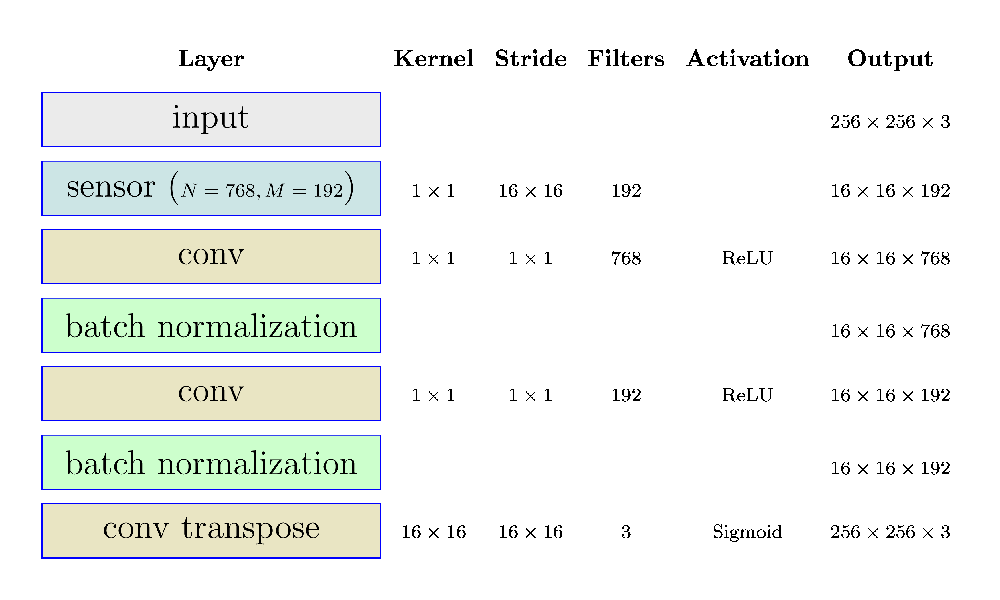
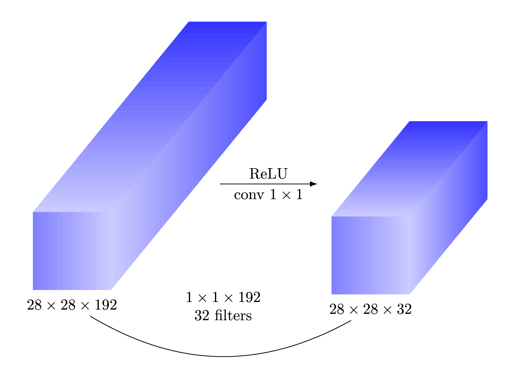
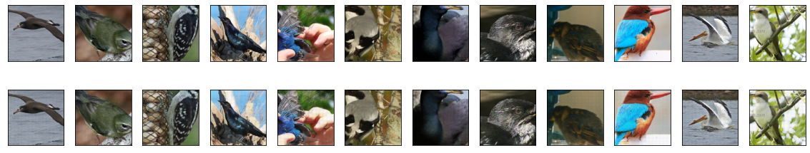

Fully Convolutional Stacked Denoising Autoencoders¶
[MPB15] presents a deep learning based framework for sensing and recovering structured signals. This work builds on the ideas developed in it and presents a fully convolutional auto-encoder architecture for the same.
Compressive Sensing Framework¶
We consider a set of signals \(x \in \RR^N\) from a specific domain (e.g. images).
In compressive sensing, a number of random measurements are taken over the signal mapping from the signal space \(\RR^N\) to a measurement space \(\RR^M\) via a mapping
In general, this mapping from signal space to measurement space can be either linear or non-linear. A linear mapping is typically represented via a sensing matrix \(\BPhi\) as
Compressive sensing is a field that focuses on solving the inverse problem of recovering the signal \(x\) from the linear measurements \(y\). This is generally possible if \(x\) has a sparse representation in some basis \(\BPsi\) such that
where \(\alpha\) has only \(K \ll N\) non-zero entries.
Under these conditions, a small number of linear measurements \(M \ll N\) is sufficient to recover the original signal \(x\).
The basis \(\BPsi\) in which the signal has a sparse (or compressive) representation is domain specific. Some popular bases include:
Wavelets
Frames
Dictionaries (like multiple orthonormal bases)
Dictionaries learnt from data
Sparse recovery is the process of recovering the sparse representation \(\alpha\) from the measurements \(y\) given that the sparsifying basis \(\BPsi\) and the sensing matrix \(\BPhi\) are known. This is represented by the step:
in the diagram above. Typical recovery algorithms include:
Convex optimization based routines like basis pursuit
Greedy algorithms like OMP, CoSaMP, IHT
Stacked Denoising Autoencoder¶
[MPB15] considers how deep learning ideas can be used to develop a recovery algorithm from compressed measurements of a signal.
In particular, it is not necessary to choose a specific sparsifying basis for the recovery of signals. It is enough to know that the signals are compressible in some basis and a suitable recovery algorithm can be learnt directly from the data in the form of a neural network.
The figure above represents the recovery directly from measurement space to the signal space.
Deep learning architectures can be constructed for following scenarios:
Recovery of the signal from fixed linear measurements (using random sensing matrices)
Recovery of the signal from nonlinear adaptive compressive measurements
While in the first scenario, the sensing matrix \(\BPhi\) is fixed and known apriori, in the second scenario, the sensing mapping \(\mathbf{\Gamma}\) is also learned during the training process.
The neural network architecture ideally suited for solving this kind of recovery problem is a stacked denoising autoencoder (SDA).
SDA + Linear Measurements¶
The diagram above shows a four layer Stacked Denoising Autoencoder (SDA) for recovering signals from their linear measurements. The first layer is essentially a sensing matrix (no nonlinearity added). The following three layers form a neural network for which:
The input is the linear measurements \(y\).
The output is the reconstruction of the \(\hat{x}\) of the original signal.
In other words:
The first layer is the encoder
The following three layers are the decoder
Each layer in the decoder is a fully connected layer that implements an affine transformation followed by a nonlinearity.
The functions of three layers in the decoder are described below.
Layer 1 (input \(\RR^M\), output \(\RR^N\))
\(\mathbf{W}_1 \in \RR^{N \times M}\) and \(\mathbf{b}_1 \in \RR^N\) are the weight matrix and bias vector for the first decoding layer.
Layer 2 (input \(\RR^N\), output \(\RR^N\))
\(\mathbf{W}_2 \in \RR^{M \times N}\) and \(\mathbf{b}_2 \in \RR^M\) are the weight matrix and bias vector for the second decoding layer.
Layer 3 (input \(\RR^M\), output \(\RR^N\))
\(\mathbf{W}_3 \in \RR^{N \times M}\) and \(\mathbf{b}_3 \in \RR^N\) are the weight matrix and bias vector for the third and final decoding layer.
The set of parameters to be trained in this network is given by:
Working with Images¶
SDA layers are fully connected layers. Hence, the input layer has to be connected to all pixels in an image. This is computationally infeasible for large images.
The standard practice is to divide image into small patches and vectorize each patch. Then, the network can process one patch at a time (for encoding and decoding).
[MPB15] trained their SDA for \(32 \times 32\) patches of grayscale images. Working with patches leads to some blockiness artifact in the reconstruction. The authors suggest using overlapped patches during sensing and averaging the reconstructions to avoid blockiness.
In the following, we discuss how SDA can be developed as a network consisting solely of convolutional layers.
Fully Convolutional Stacked Denoising Autoencoder¶
The figure below presents the architecture of the fully convolutional stacked denoising autoencoder.
Input
We use Caltech-UCSD Birds-200-2011 dataset [WAS08] for our training.
We work with color images.
For training, we work with randomly selected subset of images.
We pick the center crop of size \(256 \times 256\) from these images.
If an image has a smaller size, it is resized first preserving the aspect ratio and then the center part of \(256 \times 256\) is cropped.
Image pixels are mapped to the range \([0, 255]\).
During training, batches of 32 images are fed to the network.
Linear measurements
It is possible to implement patch-wise compressive sampling \(y = \BPhi x\) using a convolutional layer.
Consider patches of size \(N = n \times n \times 3\).
Use a convolutional kernel with kernel size \(n \times n\).
Use a stride of \(n \times n\).
Don’t use any bias.
Don’t use any activation function (i.e. linear activation).
Use \(M\) such kernels.
What is happening?
Each kernel is a row of the sensing matrix \(\BPhi\)
Each kernel is applied on a volume of size \(N = n \times n \times 3\) to generate a single value.
In effect it is an inner product of one row of \(\BPhi\), with one (linearized) patch of the input image.
The stride of \(n \times n\) ensures that the kernel is applied on non-overlapping patches of the input image.
\(M\) separate kernels are \(M\) rows of the sensing matrix \(\BPhi\).
Let \(b = 256 / n\).
Then, the number of patches in the image is \(b \times b\).
Each input patch gets mapped to a single pixel on each output channel.
Thus, each depth vector (across all channels) is a measurement vector for each input patch.
Note
The Compression Ratio can be defined as the ratio \(\frac{N}{M}\). In the first design, we will take compression ratio = 4. In the sequel, we will vary the compression ratio to how the quality of reconstruction varies with compression ratio.
The decoder
The decoder consists of following layers
2 1x1 convolutional layers with batch normalization
1 final transposed convolutional layer
1x1 Convolutions for decoder layer 1 and 2
Since, each image patch is represented by a depth vector in the input tensor to the decoder, we need a way to map such a vector to another vector as per the FC layers in the SDA. This can be easily achieved by 1x1 convolutions.
Transposed convolution for the final decoder layer
Final challenge is to take the depth vectors for individual image patches and map them back into regular image patches with 3 channels.
A transposed convolution layer with identical kernel size and stride as the encoding layer can achieve this job.
Note
There are few differences from the approach taken in [MPB15].
We can work with color images directly. No need for grayscale conversion.
We use ReLU activations in decoder layers 1 and 2.
The final decoder layer uses sigmoid activation to ensure that the output remains clipped between 0 and 1.
We have added batch normalization after layer 1 and 2 of the decoder.
While this architecture doesn’t address the blockiness issue, it can probably be addressed easily by adding one more convolutional layer after the decoder.
Training¶
1000 images were randomly sampled from the Caltech-UCSD Birds-200-2011 dataset.
Center crop of 256x256 was used.
Images were divided by 255 to bring all the pixels to [0,1] range.
The dataset was divided into 3 parts: 600 images in training set, 200 images in validation set and 200 images in test set.
Data augmentation was used to increase the number of training examples.
Rotation up to 10 degrees.
Shear upto 5 degrees
Vertical shift upto 2 percent
Horizontal flips
Batch size was 32 images
25 batches per epoch
80 epochs
Evaluation¶
We selected a set of 12 representative images from the dataset for measuring the performance of the autoencoder.
The figure below shows original images in row 1 and its reconstructions in row 2.
The reconstruction error was measured using PSNR (implementation from Scikit-Image [VdWSchonbergerNI+14]).
Image |
PSNR (dB) |
|---|---|
Black Footed Albatross |
31.66 |
Black Throated Blue Warbler |
28.99 |
Downy Woodpecker |
27.87 |
Fish Crow |
25.18 |
Indigo Bunting |
25.54 |
Loggerhead Shrike |
28.62 |
Red Faced Cormorant |
31.12 |
Rhinoceros Auklet |
24.41 |
Vesper Sparrow |
31.53 |
White Breasted Kingfisher |
25.03 |
White Pelican |
25.89 |
Yellow Billed Cuckoo |
25.42 |
The reconstruction is excellent and PSNR for these sample images is quite high.
Implementation Details¶
The autoencoder was implemented using Keras [Cho16, C+15]. and Tensorflow [ABC+16, Geron19].
The model implementation is available here .
Notebooks
Training and evaluation was done using Google Colab.
References¶
- ABC+16
Martín Abadi, Paul Barham, Jianmin Chen, Zhifeng Chen, Andy Davis, Jeffrey Dean, Matthieu Devin, Sanjay Ghemawat, Geoffrey Irving, Michael Isard, and others. Tensorflow: a system for large-scale machine learning. In 12th $\$USENIX$\$ Symposium on Operating Systems Design and Implementation ($\$OSDI$\$ 16), 265–283. 2016.
- Cho16
Francois Chollet. Building autoencoders in keras. The Keras Blog, 2016.
- C+15
Francois Chollet and others. Keras. 2015. URL: https://github.com/fchollet/keras.
- Geron19
Aurélien Géron. Hands-on machine learning with Scikit-Learn, Keras, and TensorFlow: Concepts, tools, and techniques to build intelligent systems. O'Reilly Media, 2019.
- MPB15(1,2,3,4)
Ali Mousavi, Ankit B Patel, and Richard G Baraniuk. A deep learning approach to structured signal recovery. In 2015 53rd annual allerton conference on communication, control, and computing (Allerton), 1336–1343. IEEE, 2015.
- VdWSchonbergerNI+14
Stefan Van der Walt, Johannes L Schönberger, Juan Nunez-Iglesias, François Boulogne, Joshua D Warner, Neil Yager, Emmanuelle Gouillart, and Tony Yu. Scikit-image: image processing in python. PeerJ, 2:e453, 2014.
- WAS08
Zhongmin Wang, Gonzalo R Arce, and Brian M Sadler. Subspace compressive detection for sparse signals. In Acoustics, Speech and Signal Processing, 2008. ICASSP 2008. IEEE International Conference on, 3873–3876. IEEE, 2008.